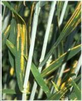
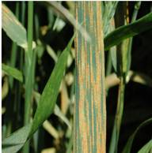
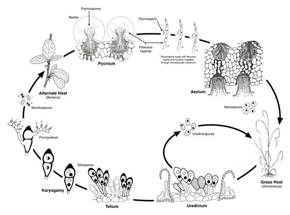

WHEAT :: MAJOR DISEASES ::YELLOW OR STRIPE RUST
Yellow or stripe rust - Puccinia striiformis
Symptom
Mainly occur on leaves than the leaf sheaths and stem. Bright yellow pustules (Uredia) appear on leaves at early stage of crop and pustules are arranged in linear rows as stripes. The stripes are yellow to orange yellow. The teliospores are also arranged in long stripes and are dull black in colour.
{kind=link}
|  |  |
Symptoms |
|
Pathogen
The uredospores of rust pathogen are almost round or oval in shape and bright orange in colour. The teliospores are bright organge to dark brown, two celled and flattened at the top. Sterile paraphyses are also present at the end of sorus.
Disease Cycle
In India, all these rusts appear in wheat growing belt during Rabi crop season. Uredosori turn into teliosori as summer approaches. The inoculum survives in the form of uredospores / teliospores in the hills during off season on self sown crop or volunteer hosts, which provide an excellent source of inoculum. In India, role of alternate host (Barberis) is not there in completing the life cycle.
The fungus is inhibited by temperatures over 20˚C although strains tolerant of high temperatures do exist. The complete cycle from infection to the production of new spores can take as little as 7 days during ideal conditions. The disease cycle may therefore be repeated many times in one season. During late summer, the dark teliospores may be produced. These can germinate to produce yet another spore type, the basidiospore, but no alternate host has been found. Although the teliospores seem to have no function in the disease cycle they may contribute to the development of new races through sexual recombination.
|  |
| Life cycle of Puccinia graminis |
Favourable Conditions
- Low temperature (15-20˚C) and high humidity during November – December favour black and brown rusts.
- Temperature less < 10o favours yellow rusts.
Disease cycle
Uredospores and dormant mycelium survive on stubbles and straws and also on weed hosts and self sown wheat crops. Wind borne uredospores from hills are lifted due to cyclonic winds and infect the crop in the plains during crop season.
Management
- Mixed cropping with suitable crops.
- Avoid excess dose of nitrogenous fertilizers.
- Spray Zineb at 2.5 kg/ha or Propioconazole @ 0.1 %.
- Grow resistant varieties like PBW 343, PBW 550, PBW 17